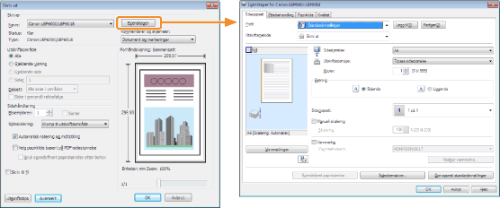
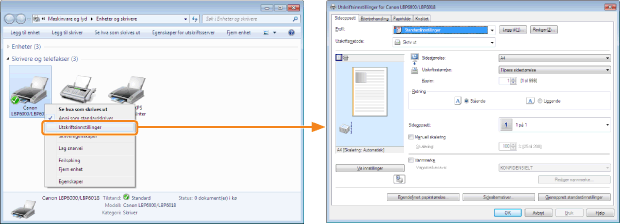
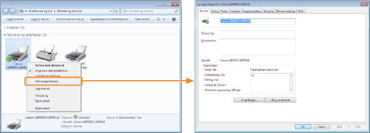

Du kan spesifisere de forskjellige utskriftsinnstillingene i innstillingsskjermen til skriverdriveren.
Følgende metoder for å vise innstillingsskjermen finnes.
Vise fra et program
De spesifiserte innstillingene gjelder kun for data som skal skrives ut fra samme program. Gå ut fra programmet tilbakestiller innstillingene som er endret til standardinnstillinger.
|
Hvordan du viser
(Prosedyren kan være annerledes på programmet du bruker.)
|

Vise fra utskriftsmappen ( "Grunnleggende operasjoner/forskjellig informasjon for Windows")
"Grunnleggende operasjoner/forskjellig informasjon for Windows")
"Grunnleggende operasjoner/forskjellig informasjon for Windows")<Skjermen for utskriftsinnstillinger>
Du kan endre standardverdiene for utskriftsinnstillinger som gjelder for alle data.
|
Hvordan du viser
Høyreklikk på ikonet for denne skriveren, velg deretter [Utskriftsinnstillinger] fra hurtigmenyen.
|

<Skjermen for skriveregenskaper>
Du kan spesifisere innstillingene for profiler som skal legges til serveren, og så videre.
|
Hvordan du viser
Høyreklikk på ikonet for denne skriveren, og velg deretter [Skriveregenskaper] eller [Egenskaper] fra hurtigmenyen.
|

|
MERK
|
|
For detaljer om disse innstillingene
Se Hjelp.
Om kategoriene som vises av Windows
De følgende kategoriene vises av Windows. For flere detaljer, se Windows Hjelp.
[Generelt]-kategori
[Deling]-kategori
[Porter]-kategori
[Avansert]-kategori
[Fargebehandling]-kategori
[Sikkerhet]-kategori
Om skriverdriveren
Funksjonene til skriverdriveren kan bli endret på grunn av oppgradering.
|